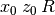
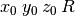
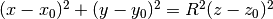
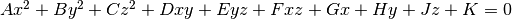
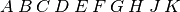
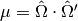
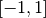
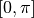
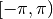
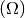

3. Writing XML Input Files¶
Unlike many other Monte Carlo codes which use an arbitrary-format ASCII file with “cards” to specify a particular geometry, materials, and associated run settings, the input files for OpenMC are structured in a set of XML files. XML, which stands for eXtensible Markup Language, is a simple format that allows data to be exchanged efficiently between different programs and interfaces.
Anyone who has ever seen webpages written in HTML will be familiar with the structure of XML whereby “tags” enclosed in angle brackets denote that a particular piece of data will follow. Let us examine the follow example:
<person>
<firstname>John</firstname>
<lastname>Smith</lastname>
<age>27</age>
<occupation>Health Physicist</occupation>
</person>
Here we see that the first tag indicates that the following data will describe a person. The nested tags firstname, lastname, age, and occupation indicate characteristics about the person being described.
In much the same way, OpenMC input uses XML tags to describe the geometry, the materials, and settings for a Monte Carlo simulation.
3.1. Overview of Files¶
To assemble a complete model for OpenMC, one needs to create separate XML files for the geometry, materials, and settings. Additionally, there are three optional input files. The first is a tallies XML file that specifies physical quantities to be tallied. The second is a plots XML file that specifies regions of geometry which should be plotted. The third is a CMFD XML file that specifies coarse mesh acceleration geometry and execution parameters. OpenMC expects that these files are called:
geometry.xmlmaterials.xmlsettings.xmltallies.xmlplots.xmlcmfd.xml
3.2. Validating XML Files¶
Input files can be checked before executing OpenMC using the
openmc-validate-xml script which is installed alongside the Python API. Two
command line arguments can be set when running openmc-validate-xml:
-i,--input-path- Location of OpenMC input files. Default: current working directory-r,--relaxng-path- Location of OpenMC RelaxNG files. Default: None
If the RelaxNG path is not set, the script will search for these files because
it expects that the user is either running the script located in the install
directory bin folder or in src/utils. Once executed, it will match
OpenMC XML files with their RelaxNG schema and check if they are valid. Below
is a table of the messages that will be printed after each file is checked.
| Message | Description |
|---|---|
| [XML ERROR] | Cannot parse XML file. |
| [NO RELAXNG FOUND] | No RelaxNG file found for XML file. |
| [NOT VALID] | XML file does not match RelaxNG. |
| [VALID] | XML file matches RelaxNG. |
As an example, if OpenMC is installed in the directory /opt/openmc/ and the
current working directory is where OpenMC XML input files are located, they can
be validated using the following command:
/opt/openmc/bin/openmc-validate-xml
3.3. Settings Specification – settings.xml¶
All simulation parameters and miscellaneous options are specified in the settings.xml file.
3.3.1. <confidence_intervals> Element¶
The <confidence_intervals> element has no attributes and has an accepted
value of “true” or “false”. If set to “true”, uncertainties on tally results
will be reported as the half-width of the 95% two-sided confidence interval. If
set to “false”, uncertainties on tally results will be reported as the sample
standard deviation.
Default: false
3.3.2. <cross_sections> Element¶
The <cross_sections> element has no attributes and simply indicates the path
to an XML cross section listing file (usually named cross_sections.xml). If this
element is absent from the settings.xml file, the CROSS_SECTIONS
environment variable will be used to find the path to the XML cross section
listing.
3.3.3. <cutoff> Element¶
The <cutoff> element indicates the weight cutoff used below which particles
undergo Russian roulette. Surviving particles are assigned a user-determined
weight. Note that weight cutoffs and Russian rouletting are not turned on by
default. This element has the following attributes/sub-elements:
weight: The weight below which particles undergo Russian roulette.
Default: 0.25
weight_avg: The weight that is assigned to particles that are not killed after Russian roulette.
Default: 1.0
3.3.4. <eigenvalue> Element¶
The <eigenvalue> element indicates that a  -eigenvalue calculation
should be performed. It has the following attributes/sub-elements:
-eigenvalue calculation
should be performed. It has the following attributes/sub-elements:
batches: The total number of batches, where each batch corresponds to multiple fission source iterations. Batching is done to eliminate correlation between realizations of random variables.
Default: None
generations_per_batch: The number of total fission source iterations per batch.
Default: 1
inactive: The number of inactive batches. In general, the starting cycles in a criticality calculation can not be used to contribute to tallies since the fission source distribution and eigenvalue are generally not converged immediately.
Default: None
particles: The number of neutrons to simulate per fission source iteration.
Default: None
keff_trigger: This tag specifies a precision trigger on the combined
. The trigger is a convergence criterion on the uncertainty of the estimated eigenvalue. It has the following attributes/sub-elements:
type: The type of precision trigger. Accepted options are “variance”, “std_dev”, and “rel_err”.
variance: Variance of the batch mean std_dev: Standard deviation of the batch mean rel_err: Relative error of the batch mean Default: None
threshold: The precision trigger’s convergence criterion for the combined
Default: None
Note
See section on the <trigger> Element for more information.


3.3.5. <energy_grid> Element¶
The <energy_grid> element determines the treatment of the energy grid during
a simulation. The valid options are “nuclide”, “logarithm”, and
“material-union”. Setting this element to “nuclide” will cause OpenMC to use a
nuclide’s energy grid when determining what points to interpolate between for
determining cross sections (i.e. non-unionized energy grid). Setting this
element to “logarithm” causes OpenMC to use a logarithmic mapping technique
described in LA-UR-14-24530. Setting this element to “material-union” will
cause OpenMC to create energy grids that are unionized material-by-material and
use these grids when determining the energy-cross section pairs to interpolate
cross section values between.
Default: logarithm
3.3.6. <entropy> Element¶
The <entropy> element describes a mesh that is used for calculating Shannon
entropy. This mesh should cover all possible fissionable materials in the
problem. It has the following attributes/sub-elements:
dimension: The number of mesh cells in the x, y, and z directions, respectively.
- Default: If this tag is not present, the number of mesh cells is
automatically determined by the code.
lower_left: The Cartesian coordinates of the lower-left corner of the mesh.
Default: None
upper_right: The Cartesian coordinates of the upper-right corner of the mesh.
Default: None
3.3.7. <fixed_source> Element¶
The <fixed_source> element indicates that a fixed source calculation should
be performed. It has the following attributes/sub-elements:
batches: The total number of batches. For fixed source calculations, each batch represents a realization of random variables for tallies.
Default: None
particles: The number of particles to simulate per batch.
Default: None
3.3.8. <log_grid_bins> Element¶
The <log_grid_bins> element indicates the number of bins to use for the
logarithmic-mapped energy grid. Using more bins will result in energy grid
searches over a smaller range at the expense of more memory. The default is
based on the recommended value in LA-UR-14-24530.
Default: 8000
3.3.9. <natural_elements> Element¶
The <natural_elements> element indicates to OpenMC what nuclides are
available in the cross section library when expanding an <element> into
separate isotopes (see <material> Element). The accepted values are:
- ENDF/B-VII.0
- ENDF/B-VII.1
- JEFF-3.1.1
- JEFF-3.1.2
- JEFF-3.2
- JENDL-3.2
- JENDL-3.3
- JENDL-4.0
Note that the value is case-insensitive, so “ENDF/B-VII.1” is equivalent to “endf/b-vii.1”.
Default: ENDF/B-VII.1
3.3.10. <no_reduce> Element¶
The <no_reduce> element has no attributes and has an accepted value of
“true” or “false”. If set to “true”, all user-defined tallies and global tallies
will not be reduced across processors in a parallel calculation. This means that
the accumulate score in one batch on a single processor is considered as an
independent realization for the tally random variable. For a problem with large
tally data, this option can significantly improve the parallel efficiency.
Default: false
3.3.11. <output> Element¶
The <output> element determines what output files should be written to disk
during the run. The sub-elements are described below, where “true” will write
out the file and “false” will not.
cross_sections: Writes out an ASCII summary file of the cross sections that were read in.
Default: false
summary: Writes out an ASCII summary file describing all of the user input files that were read in.
Default: false
tallies: Write out an ASCII file of tally results.
Default: true
Note
The tally results will always be written to a binary/HDF5 state point file.
3.3.12. <output_path> Element¶
The <output_path> element specifies an absolute or relative path where all
output files should be written to. The specified path must exist or else OpenMC
will abort.
Default: Current working directory
3.3.13. <ptables> Element¶
The <ptables> element determines whether probability tables should be used
in the unresolved resonance range if available. This element has no attributes
or sub-elements and can be set to either “false” or “true”.
Default: true
3.3.14. <resonance_scattering> Element¶
The resonance_scattering element can contain one or more of the following
attributes or sub-elements:
scatterer: An element with attributes/sub-elements called
nuclide,method,xs_label,xs_label_0K,E_min, andE_max. Thenuclideattribute is the name, as given by thenameattribute within thenuclidesub-element of thematerialelement inmaterials.xml, of the nuclide to which a resonance scattering treatment is to be applied. Themethodattribute gives the type of resonance scattering treatment that is to be applied to thenuclide. Acceptable inputs - none of which are case-sensitive - for themethodattribute areARES,CXS,WCM, andDBRC. Descriptions of each of these methods are documented here. Thexs_labelattribute gives the label for the cross section data of thenuclideat a given temperature. Thexs_label_0Kgives the label for the 0 K cross section data for thenuclide. TheE_minattribute gives the minimum energy above which themethodis applied. TheE_maxattribute gives the maximum energy below which themethodis applied. One example would be as follows:<resonance_scattering> <scatterer> <nuclide>U-238</nuclide> <method>ARES</method> <xs_label>92238.72c</xs_label> <xs_label_0K>92238.00c</xs_label_0K> <E_min>5.0e-6</E_min> <E_max>40.0e-6</E_max> </scatterer> <scatterer> <nuclide>Pu-239</nuclide> <method>dbrc</method> <xs_label>94239.72c</xs_label> <xs_label_0K>94239.00c</xs_label_0K> <E_min>0.01e-6</E_min> <E_max>210.0e-6</E_max> </scatterer> </resonance_scattering>Note
If the
resonance_scatteringelement is not given, the free gas, constant cross section (cxs) scattering model, which has historically been used by Monte Carlo codes to sample target velocities, is used to treat the target motion of all nuclides. Ifresonance_scatteringis present, thecxsmethod is applied belowE_minand the target-at-rest (asymptotic) kernel is used aboveE_max. An arbitrary number ofscattererelements may be specified, each corresponding to a single nuclide at a single temperature.Defaults: None (scatterer), ARES (method), 0.01 eV (E_min), 1.0 keV (E_max)
3.3.15. <run_cmfd> Element¶
The <run_cmfd> element indicates whether or not CMFD acceleration should be
turned on or off. This element has no attributes or sub-elements and can be set
to either “false” or “true”.
Defualt: false
3.3.16. <seed> Element¶
The seed element is used to set the seed used for the linear congruential
pseudo-random number generator.
Default: 1
3.3.17. <source> Element¶
The source element gives information on an external source distribution to
be used either as the source for a fixed source calculation or the initial
source guess for criticality calculations. It takes the following
attributes/sub-elements:
file: If this attribute is given, it indicates that the source is to be read from a binary source file whose path is given by the value of this element. Note, the number of source sites needs to be the same as the number of particles simulated in a fission source generation.
Default: None
space: An element specifying the spatial distribution of source sites. This element has the following attributes:
type: The type of spatial distribution. Valid options are “box”, “fission”, and “point”. A “box” spatial distribution has coordinates sampled uniformly in a parallelepiped. A “fission” spatial distribution samples locations from a “box” distribution but only locations in fissionable materials are accepted. A “point” spatial distribution has coordinates specified by a triplet.
Default: None
parameters: For a “box” or “fission” spatial distribution,
parametersshould be given as six real numbers, the first three of which specify the lower-left corner of a parallelepiped and the last three of which specify the upper-right corner. Source sites are sampled uniformly through that parallelepiped.For a “point” spatial distribution,
parametersshould be given as three real numbers which specify the (x,y,z) location of an isotropic point sourceDefault: None
angle: An element specifying the angular distribution of source sites. This element has the following attributes:
type: The type of angular distribution. Valid options are “isotropic” and “monodirectional”. The angle of the particle emitted from a source site is isotropic if the “isotropic” option is given. The angle of the particle emitted from a source site is the direction specified in the <parameters> attribute if “monodirectional” option is given.
Default: isotropic
parameters: For an “isotropic” angular distribution,
parametersshould not be specified.For a “monodirectional” angular distribution,
parametersshould be given as three real numbers which specify the angular cosines with respect to each axis.Default: None
energy: An element specifying the energy distribution of source sites. This element has the following attributes:
type: The type of energy distribution. Valid options are “monoenergetic”, “watt”, and “maxwell”. The “monoenergetic” option produces source sites at a single energy. The “watt” option produces source sites whose energy is sampled from a Watt fission spectrum. The “maxwell” option produce source sites whose energy is sampled from a Maxwell fission spectrum.
Default: watt
parameters: For a “monoenergetic” energy distribution,
parametersshould be given as the energy in MeV of the source sites.For a “watt” energy distribution,
parametersshould be given as two real numbersand
that parameterize the distribution
.
For a “maxwell” energy distribution,
parametersshould be given as one real number.
Default: 0.988 2.249
write_initial: An element specifying whether to write out the initial source bank used at the beginning of the first batch. The output file is named “initial_source.binary(h5)”
Default: false
3.3.18. <state_point> Element¶
The <state_point> element indicates at what batches a state point file
should be written. A state point file can be used to restart a run or to get
tally results at any batch. The default behavior when using this tag is to
write out the source bank in the state_point file. This behavior can be
customized by using the <source_point> element. This element has the
following attributes/sub-elements:
batches: A list of integers separated by spaces indicating at what batches a state point file should be written.
Default: Last batch only
interval: A single integer
indicating that a state point should be written every
Default: None
3.3.19. <source_point> Element¶
The <source_point> element indicates at what batches the source bank
should be written. The source bank can be either written out within a state
point file or separately in a source point file. This element has the following
attributes/sub-elements:
batches: A list of integers separated by spaces indicating at what batches a state point file should be written. It should be noted that if the
separateattribute is not set to “true”, this list must be a subset of state point batches.Default: Last batch only
interval: A single integer
separateattribute is not set to “true”, this value should produce a list of batches that is a subset of state point batches.Default: None
separate: If this element is set to “true”, a separate binary source point file will be written. Otherwise, the source sites will be written in the state point directly.
Default: false
source_write: If this element is set to “false”, source sites are not written to the state point or source point file. This can substantially reduce the size of state points if large numbers of particles per batch are used.
Default: true
overwrite_latest: If this element is set to “true”, a source point file containing the source bank will be written out to a separate file named
source.binaryorsource.h5depending on if HDF5 is enabled. This file will be overwritten at every single batch so that the latest source bank will be available. It should be noted that a user can set both this element to “true” and specify batches to write a permanent source bank.Default: false
3.3.20. <survival_biasing> Element¶
The <survival_biasing> element has no attributes and has an accepted value
of “true” or “false”. If set to “true”, this option will enable the use of
survival biasing, otherwise known as implicit capture or absorption.
Default: false
3.3.21. <threads> Element¶
The <threads> element indicates the number of OpenMP threads to be used for
a simulation. It has no attributes and accepts a positive integer value.
Default: None (Determined by environment variableOMP_NUM_THREADS)
3.3.22. <trace> Element¶
The <trace> element can be used to print out detailed information about a
single particle during a simulation. This element should be followed by three
integers: the batch number, generation number, and particle number.
Default: None
3.3.23. <track> Element¶
The <track> element specifies particles for which OpenMC will output binary
files describing particle position at every step of its transport. This element
should be followed by triplets of integers. Each triplet describes one
particle. The integers in each triplet specify the batch number, generation
number, and particle number, respectively.
Default: None
3.3.24. <trigger> Element¶
OpenMC includes tally precision triggers which allow the user to define
uncertainty thresholds on in the <eigenvalue> subelement of
settings.xml, and/or tallies in tallies.xml. When using triggers,
OpenMC will run until it completes as many batches as defined by <batches>.
At this point, the uncertainties on all tallied values are computed and
compared with their corresponding trigger thresholds. If any triggers have not
been met, OpenMC will continue until either all trigger thresholds have been
satisfied or <max_batches> has been reached.
The <trigger> element provides an active “toggle switch” for tally
precision trigger(s), the maximum number of batches and the batch interval. It
has the following attributes/sub-elements:
active: This determines whether or not to use trigger(s). Trigger(s) are used when this tag is set to “true”.
max_batches: This describes the maximum number of batches allowed when using trigger(s).
Note
When max_batches is set, the number of
batchesshown in<eigenvalue>element represents minimum number of batches to simulate when using the trigger(s).batch_interval: This tag describes the number of batches in between convergence checks. OpenMC will check if the trigger has been reached at each batch defined by
batch_intervalafter the minimum number of batches is reached.Note
If this tag is not present, the
batch_intervalis predicted dynamically by OpenMC for each convergence check. The predictive model assumes no correlation between fission sources distributions from batch-to-batch. This assumption is reasonable for fixed source and small criticality calculations, but is very optimistic for highly coupled full-core reactor problems.
3.3.25. <uniform_fs> Element¶
The <uniform_fs> element describes a mesh that is used for re-weighting
source sites at every generation based on the uniform fission site methodology
described in Kelly et al., “MC21 Analysis of the Nuclear Energy Agency Monte
Carlo Performance Benchmark Problem,” Proceedings of Physor 2012, Knoxville,
TN (2012). This mesh should cover all possible fissionable materials in the
problem. It has the following attributes/sub-elements:
dimension: The number of mesh cells in the x, y, and z directions, respectively.
Default: None
lower_left: The Cartesian coordinates of the lower-left corner of the mesh.
Default: None
upper_right: The Cartesian coordinates of the upper-right corner of the mesh.
Default: None
3.3.26. <verbosity> Element¶
The <verbosity> element tells the code how much information to display to
the standard output. A higher verbosity corresponds to more information being
displayed. This element takes the following attributes:
value: The specified verbosity between 1 and 10.
Default: 5
3.4. Geometry Specification – geometry.xml¶
The geometry in OpenMC is described using constructive solid geometry (CSG), also sometimes referred to as combinatorial geometry. CSG allows a user to create complex objects using Boolean operators on a set of simpler surfaces. In the geometry model, each unique volume is defined by its bounding surfaces. In OpenMC, most quadratic surfaces can be modeled and used as bounding surfaces.
Every geometry.xml must have an XML declaration at the beginning of the file and a root element named geometry. Within the root element the user can define any number of cells, surfaces, and lattices. Let us look at the following example:
<?xml version="1.0"?>
<geometry>
<!-- This is a comment -->
<surface>
<id>1</id>
<type>sphere</type>
<coeffs>0.0 0.0 0.0 5.0</coeffs>
<boundary>vacuum</boundary>
<surface>
<cell>
<id>1</id>
<universe>0</universe>
<material>1</material>
<region>-1</region>
</cell>
</geometry>
At the beginning of this file is a comment, denoted by a tag starting with
<!-- and ending with -->. Comments, as well as any other type of input,
may span multiple lines. One convenient feature of the XML input format is that
sub-elements of the cell and surface elements can also be equivalently
expressed of attributes of the original element, e.g. the geometry file above
could be written as:
<?xml version="1.0"?>
<geometry>
<!-- This is a comment -->
<surface id="1" type="sphere" coeffs="0.0 0.0 0.0 5.0" boundary="vacuum" />
<cell id="1" universe="0" material="1" region="-1" />
</geometry>
3.4.1. <surface> Element¶
Each <surface> element can have the following attributes or sub-elements:
id: A unique integer that can be used to identify the surface.
Default: None
name: An optional string name to identify the surface in summary output files. This string is limited to 52 characters for formatting purposes.
Default: “”
type: The type of the surfaces. This can be “x-plane”, “y-plane”, “z-plane”, “plane”, “x-cylinder”, “y-cylinder”, “z-cylinder”, “sphere”, “x-cone”, “y-cone”, “z-cone”, or “quadric”.
Default: None
coeffs: The corresponding coefficients for the given type of surface. See below for a list a what coefficients to specify for a given surface
Default: None
boundary: The boundary condition for the surface. This can be “transmission”, “vacuum”, or “reflective”.
Default: “transmission”
The following quadratic surfaces can be modeled:
x-plane: A plane perpendicular to the x axis, i.e. a surface of the form . The coefficients specified are “
”.
y-plane: A plane perpendicular to the y axis, i.e. a surface of the form . The coefficients specified are “
”.
z-plane: A plane perpendicular to the z axis, i.e. a surface of the form . The coefficients specified are “
”.
plane: An arbitrary plane of the form . The coefficients specified are “
”.
x-cylinder: An infinite cylinder whose length is parallel to the x-axis. This is a quadratic surface of the form . The coefficients specified are “
”.
y-cylinder: An infinite cylinder whose length is parallel to the y-axis. This is a quadratic surface of the form . The coefficients specified are “”.
z-cylinder: An infinite cylinder whose length is parallel to the z-axis. This is a quadratic surface of the form . The coefficients specified are “
”.
sphere: A sphere of the form . The coefficients specified are “”.
x-cone: A cone parallel to the x-axis of the form . The coefficients specified are “
”.
y-cone: A cone parallel to the y-axis of the form . The coefficients specified are “ z-cone: A cone parallel to the x-axis of the form . The coefficients specified are “ quadric: A general quadric surface of the form  The coefficients specified are “”.
3.4.2. <cell> Element¶
Each <cell> element can have the following attributes or sub-elements:
id: A unique integer that can be used to identify the cell.
Default: None
name: An optional string name to identify the cell in summary output files. This string is limmited to 52 characters for formatting purposes.
Default: “”
universe: The
idof the universe that this cell is contained in.Default: 0
fill: The
idof the universe that fills this cell.Note
If a fill is specified, no material should be given.
Default: None
material: The
idof the material that this cell contains. If the cell should contain no material, this can also be set to “void”.Note
If a material is specified, no fill should be given.
Default: None
region: A Boolean expression of half-spaces that defines the spatial region which the cell occupies. Each half-space is identified by the unique ID of the surface prefixed by - or + to indicate that it is the negative or positive half-space, respectively. The + sign for a positive half-space can be omitted. Valid Boolean operators are parentheses, union |, complement ~, and intersection. Intersection is implicit and indicated by the presence of whitespace. The order of operator precedence is parentheses, complement, intersection, and then union.
As an example, the following code gives a cell that is the union of the negative half-space of surface 3 and the complement of the intersection of the positive half-space of surface 5 and the negative half-space of surface 2:
<cell id="1" material="1" region="-3 | ~(5 -2)" />Note
The
regionattribute/element can be omitted to make a cell fill its entire universe.Default: A region filling all space.
rotation: If the cell is filled with a universe, this element specifies the angles in degrees about the x, y, and z axes that the filled universe should be rotated. Should be given as three real numbers. For example, if you wanted to rotate the filled universe by 90 degrees about the z-axis, the cell element would look something like:
<cell fill="..." rotation="0 0 90" />Default: None
translation: If the cell is filled with a universe, this element specifies a vector that is used to translate (shift) the universe. Should be given as three real numbers.
Note
Any translation operation is applied after a rotation, if also specified.
Default: None
3.4.3. <lattice> Element¶
The <lattice> can be used to represent repeating structures (e.g. fuel pins
in an assembly) or other geometry which fits onto a rectilinear grid. Each cell
within the lattice is filled with a specified universe. A <lattice> accepts
the following attributes or sub-elements:
id: A unique integer that can be used to identify the lattice.
name: An optional string name to identify the lattice in summary output files. This string is limited to 52 characters for formatting purposes.
Default: “”
dimension: Two or three integers representing the number of lattice cells in the x- and y- (and z-) directions, respectively.
Default: None
lower_left: The coordinates of the lower-left corner of the lattice. If the lattice is two-dimensional, only the x- and y-coordinates are specified.
Default: None
pitch: If the lattice is 3D, then three real numbers that express the distance between the centers of lattice cells in the x-, y-, and z- directions. If the lattice is 2D, then omit the third value.
Default: None
outer: The unique integer identifier of a universe that will be used to fill all space outside of the lattice. The universe will be tiled repeatedly as if it were placed in a lattice of infinite size. This element is optional.
Default: An error will be raised if a particle leaves a lattice with no outer universe.
universes: A list of the universe numbers that fill each cell of the lattice.
Default: None
Here is an example of a properly defined 2d rectangular lattice:
<lattice id="10" dimension="3 3" outer="1">
<lower_left> -1.5 -1.5 </lower_left>
<pitch> 1.0 1.0 </pitch>
<universes>
2 2 2
2 1 2
2 2 2
</universes>
</lattice>
3.4.4. <hex_lattice> Element¶
The <hex_lattice> can be used to represent repeating structures (e.g. fuel
pins in an assembly) or other geometry which naturally fits onto a hexagonal
grid or hexagonal prism grid. Each cell within the lattice is filled with a
specified universe. This lattice uses the “flat-topped hexagon” scheme where two
of the six edges are perpendicular to the y-axis. A <hex_lattice> accepts
the following attributes or sub-elements:
id: A unique integer that can be used to identify the lattice.
name: An optional string name to identify the hex_lattice in summary output files. This string is limited to 52 characters for formatting purposes.
Default: “”
n_rings: An integer representing the number of radial ring positions in the xy-plane. Note that this number includes the degenerate center ring which only has one element.
Default: None
n_axial: An integer representing the number of positions along the z-axis. This element is optional.
Default: None
center: The coordinates of the center of the lattice. If the lattice does not have axial sections then only the x- and y-coordinates are specified.
Default: None
pitch: If the lattice is 3D, then two real numbers that express the distance between the centers of lattice cells in the xy-plane and along the z-axis, respectively. If the lattice is 2D, then omit the second value.
Default: None
outer: The unique integer identifier of a universe that will be used to fill all space outside of the lattice. The universe will be tiled repeatedly as if it were placed in a lattice of infinite size. This element is optional.
Default: An error will be raised if a particle leaves a lattice with no outer universe.
universes: A list of the universe numbers that fill each cell of the lattice.
Default: None
Here is an example of a properly defined 2d hexagonal lattice:
<hex_lattice id="10" n_rings="3" outer="1">
<center> 0.0 0.0 </center>
<pitch> 1.0 </pitch>
<universes>
202
202 202
202 202 202
202 202
202 101 202
202 202
202 202 202
202 202
202
</universes>
</hex_lattice>
3.5. Materials Specification – materials.xml¶
3.5.1. <material> Element¶
Each material element can have the following attributes or sub-elements:
id: A unique integer that can be used to identify the material.
name: An optional string name to identify the material in summary output files. This string is limited to 52 characters for formatting purposes.
Default: “”
density: An element with attributes/sub-elements called
valueandunits. Thevalueattribute is the numeric value of the density while theunitscan be “g/cm3”, “kg/m3”, “atom/b-cm”, “atom/cm3”, or “sum”. The “sum” unit indicates that values appearing inaoattributes for<nuclide>and<element>sub-elements are to be interpreted as nuclide/element densities in atom/b-cm, and the total density of the material is taken as the sum of all nuclides/elements. The “sum” option cannot be used in conjunction with weight percents.Default: None
nuclide: An element with attributes/sub-elements called
name,xs, andaoorwo. Thenameattribute is the name of the cross-section for a desired nuclide while thexsattribute is the cross-section identifier. Finally, theaoandwoattributes specify the atom or weight percent of that nuclide within the material, respectively. One example would be as follows:<nuclide name="H-1" xs="70c" ao="2.0" /> <nuclide name="O-16" xs="70c" ao="1.0" />Note
If one nuclide is specified in atom percent, all others must also be given in atom percent. The same applies for weight percentages.
An optional attribute/sub-element for each nuclide is
scattering. This attribute may be set to “data” to use the scattering laws specified by the cross section library (default). Alternatively, when set to “iso-in-lab”, the scattering laws are used to sample the outgoing energy but an isotropic-in-lab distribution is used to sample the outgoing angle at each scattering interaction. Thescatteringattribute may be most useful when using OpenMC to compute multi-group cross-sections for deterministic transport codes and to quantify the effects of anisotropic scattering.Default: None
element: Specifies that a natural element is present in the material. The natural element is split up into individual isotopes based on IUPAC Isotopic Compositions of the Elements 2009. This element has attributes/sub-elements called
name,xs, andao. Thenameattribute is the atomic symbol of the element while thexsattribute is the cross-section identifier. Finally, theaoattribute specifies the atom percent of the element within the material, respectively. One example would be as follows:<element name="Al" ao="8.7115e-03" /> <element name="Mg" ao="1.5498e-04" /> <element name="Mn" ao="2.7426e-05" /> <element name="Cu" ao="1.6993e-04" />In some cross section libraries, certain naturally occurring isotopes do not have cross sections. The <natural_elements> Element option determines how a natural element is split into isotopes in these cases.
Default: None
An optional attribute/sub-element for each element is
scattering. This attribute may be set to “data” to use the scattering laws specified by the cross section library (default). Alternatively, when set to “iso-in-lab”, the scattering laws are used to sample the outgoing energy but an isotropic-in-lab distribution is used to sample the outgoing angle at each scattering interaction. Thescatteringattribute may be most useful when using OpenMC to compute multi-group cross-sections for deterministic transport codes and to quantify the effects of anisotropic scattering.Default: None
sab: Associates an S(a,b) table with the material. This element has attributes/sub-elements called
nameandxs. Thenameattribute is the name of the S(a,b) table that should be associated with the material, andxsis the cross-section identifier for the table.Default: None
3.5.2. <default_xs> Element¶
In some circumstances, the cross-section identifier may be the same for many or
all nuclides in a given problem. In this case, rather than specifying the
xs=... attribute on every nuclide, a <default_xs> element can be used to
set the default cross-section identifier for any nuclide without an identifier
explicitly listed. This element has no attributes and accepts a 3-letter string
that indicates the default cross-section identifier, e.g. “70c”.
Default: None
3.6. Tallies Specification – tallies.xml¶
The tallies.xml file allows the user to tell the code what results he/she is interested in, e.g. the fission rate in a given cell or the current across a given surface. There are two pieces of information that determine what quantities should be scored. First, one needs to specify what region of phase space should count towards the tally and secondly, the actual quantity to be scored also needs to be specified. The first set of parameters we call filters since they effectively serve to filter events, allowing some to score and preventing others from scoring to the tally.
The structure of tallies in OpenMC is flexible in that any combination of filters can be used for a tally. The following types of filter are available: cell, universe, material, surface, birth region, pre-collision energy, post-collision energy, and an arbitrary structured mesh.
The three valid elements in the tallies.xml file are <tally>, <mesh>,
and <assume_separate>.
3.6.1. <tally> Element¶
The <tally> element accepts the following sub-elements:
name: An optional string name to identify the tally in summary output files. This string is limited to 52 characters for formatting purposes.
Default: “”
filter: Specify a filter that restricts contributions to the tally to particles within certain regions of phase space. This element and its attributes/sub-elements are described below.
Note
You may specify zero, one, or multiple filters to apply to the tally. To specify multiple filters, you must use multiple
<filter>elements.The
filterelement has the following attributes/sub-elements:
type: The type of the filter. Accepted options are “cell”, “cellborn”, “material”, “universe”, “energy”, “energyout”, “mesh”, “distribcell”, and “delayedgroup”.
bins: For each filter type, the corresponding
binsentry is given as follows:
cell: A list of cells in which the tally should be accumulated.
cellborn: This filter allows the tally to be scored to only when particles were originally born in a specified cell.
surface: A list of surfaces for which the tally should be accumulated.
material: A list of materials for which the tally should be accumulated.
universe: A list of universes for which the tally should be accumulated.
energy: A monotonically increasing list of bounding pre-collision energies for a number of groups. For example, if this filter is specified as
<filter type="energy" bins="0.0 1.0 20.0" />then two energy bins will be created, one with energies between 0 and 1 MeV and the other with energies between 1 and 20 MeV.
energyout: A monotonically increasing list of bounding post-collision energies for a number of groups. For example, if this filter is specified as
<filter type="energyout" bins="0.0 1.0 20.0" />then two post-collision energy bins will be created, one with energies between 0 and 1 MeV and the other with energies between 1 and 20 MeV.
mu: A monotonically increasing list of bounding post-collision cosines of the change in a particle’s angle (i.e., ), which represents a portion of the possible values of . For example, spanning all of with five equi-width bins can be specified as:
<filter type="mu" bins="-1.0 -0.6 -0.2 0.2 0.6 1.0" />Alternatively, if only one value is provided as a bin, OpenMC will interpret this to mean the complete range of should be automatically subdivided in to the provided value for the bin. That is, the above example of five equi-width bins spanning can be instead written as:
<filter type="mu" bins="5" />polar: A monotonically increasing list of bounding particle polar angles which represents a portion of the possible values of . For example, spanning all of with five equi-width bins can be specified as:
<filter type="polar" bins="0.0 0.6283 1.2566 1.8850 2.5132 3.1416"/>Alternatively, if only one value is provided as a bin, OpenMC will interpret this to mean the complete range of should be automatically subdivided in to the provided value for the bin. That is, the above example of five equi-width bins spanning can be instead written as:
<filter type="polar" bins="5" />azimuthal: A monotonically increasing list of bounding particle azimuthal angles which represents a portion of the possible values of . For example, spanning all of with two equi-width bins can be specified as:
<filter type="azimuthal" bins="0.0 3.1416 6.2832" />Alternatively, if only one value is provided as a bin, OpenMC will interpret this to mean the complete range of should be automatically subdivided in to the provided value for the bin. That is, the above example of five equi-width bins spanning can be instead written as:
<filter type="azimuthal" bins="2" />mesh: The
idof a structured mesh to be tallied over.distribcell: The single cell which should be tallied uniquely for all instances.
Note
The distribcell filter will take a single cell ID and will tally each unique occurrence of that cell separately. This filter will not accept more than one cell ID. It is not recommended to combine this filter with a cell or mesh filter.
delayedgroup: A list of delayed neutron precursor groups for which the tally should be accumulated. For instance, to tally to all 6 delayed groups in the ENDF/B-VII.1 library the filter is specified as:
<filter type="delayedgroup" bins="1 2 3 4 5 6" />nuclides: If specified, the scores listed will be for particular nuclides, not the summation of reactions from all nuclides. The format for nuclides should be [Atomic symbol]-[Mass number], e.g. “U-235”. The reaction rate for all nuclides can be obtained with “total”. For example, to obtain the reaction rates for U-235, Pu-239, and all nuclides in a material, this element should be:
<nuclides>U-235 Pu-239 total</nuclides>Default: total
estimator: The estimator element is used to force the use of either
analog,collision, ortracklengthtally estimation.analogis generally the least efficient though it can be used with every score type.tracklengthis generally the most efficient, but neithertracklengthnorcollisioncan be used to score a tally that requires post-collision information. For example, a scattering tally with outgoing energy filters cannot be used withtracklengthorcollisionbecause the code will not know the outgoing energy distribution.Default:
tracklengthbut will revert toanalogif necessary.scores: A space-separated list of the desired responses to be accumulated. Accepted options are “flux”, “total”, “scatter”, “absorption”, “fission”, “nu-fission”, “delayed-nu-fission”, “kappa-fission”, “nu-scatter”, “scatter-N”, “scatter-PN”, “scatter-YN”, “nu-scatter-N”, “nu-scatter-PN”, “nu-scatter-YN”, “flux-YN”, “total-YN”, “current”, “inverse-velocity” and “events”. These correspond to the following physical quantities:
flux: Total flux in particle-cm per source particle.
Note
The
analogestimator is actually identical to thecollisionestimator for the flux score.total: Total reaction rate in reactions per source particle.
scatter: Total scattering rate. Can also be identified with the
scatter-0response type. Units are reactions per source particle.absorption: Total absorption rate. This accounts for all reactions which do not produce secondary neutrons. Units are reactions per source particle.
fission: Total fission rate in reactions per source particle.
nu-fission: Total production of neutrons due to fission. Units are neutrons produced per source neutron.
delayed-nu-fission: Total production of delayed neutrons due to fission. Units are neutrons produced per source neutron.
kappa-fission: The recoverable energy production rate due to fission. The recoverable energy is defined as the fission product kinetic energy, prompt and delayed neutron kinetic energies, prompt and delayed
-ray total energies, and the total energy released by the delayed
particles. The neutrino energy does not contribute to this response. The prompt and delayed
scatter-N: Tally the Nth scattering moment, where N is the Legendre expansion order of the change in particle angle
. N must be between 0 and 10. As an example, tallying the 2nd scattering moment would be specified as
<scores> scatter-2 </scores>. Units are reactions per source particle.scatter-PN: Tally all of the scattering moments from order 0 to N, where N is the Legendre expansion order of the change in particle angle
scatter-P1is equivalent to requesting tallies ofscatter-0andscatter-1. Like forscatter-N, N must be between 0 and 10. As an example, tallying up to the 2nd scattering moment would be specified as<scores> scatter-P2 </scores>. Units are reactions per source particle.scatter-YN:
scatter-YNis similar toscatter-PNexcept an additional expansion is performed for the incoming particle direction  using the real spherical harmonics. This is useful for performing angular flux moment weighting of the scattering moments. Likescatter-PN,scatter-YNwill tally all of the moments from order 0 to N; N again must be between 0 and 10. Units are reactions per source particle.nu-scatter, nu-scatter-N, nu-scatter-PN, nu-scatter-YN: These scores are similar in functionality to their
scatter*equivalents except the total production of neutrons due to scattering is scored vice simply the scattering rate. This accounts for multiplicity from (n,2n), (n,3n), and (n,4n) reactions. Units are neutrons produced per source particle.flux-YN: Spherical harmonic expansion of the direction of motion of the total flux. This score will tally all of the harmonic moments of order 0 to N. N must be between 0 and 10. Units are particle-cm per source particle.
total-YN: The total reaction rate expanded via spherical harmonics about the direction of motion of the neutron,
. This score will tally all of the harmonic moments of order 0 to N. N must be between 0 and 10. Units are reactions per source particle.
current: Partial currents on the boundaries of each cell in a mesh. Units are particles per source particle.
Note
This score can only be used if a mesh filter has been specified. Furthermore, it may not be used in conjunction with any other score.
inverse-velocity: The flux-weighted inverse velocity where the velocity is in units of centimeters per second.
Note
The
analogestimator is actually identical to thecollisionestimator for the inverse-velocity score.events: Number of scoring events. Units are events per source particle.
trigger: Precision trigger applied to all filter bins and nuclides for this tally. It must specify the trigger’s type, threshold and scores to which it will be applied. It has the following attributes/sub-elements:
type: The type of the trigger. Accepted options are “variance”, “std_dev”, and “rel_err”.
variance: Variance of the batch mean std_dev: Standard deviation of the batch mean rel_err: Relative error of the batch mean Default: None
threshold: The precision trigger’s convergence criterion for tallied values.
Default: None
scores: The score(s) in this tally to which the trigger should be applied.
Note
The
scoresintriggermust have been defined inscoresintally. An optional “all” may be used to select all scores in this tally.Default: “all”
3.6.2. <mesh> Element¶
If a structured mesh is desired as a filter for a tally, it must be specified in
a separate element with the tag name <mesh>. This element has the following
attributes/sub-elements:
type: The type of structured mesh. The only valid option is “regular”. dimension: The number of mesh cells in each direction. lower_left: The lower-left corner of the structured mesh. If only two coordinates are given, it is assumed that the mesh is an x-y mesh. upper_right: The upper-right corner of the structured mesh. If only two coordinates are given, it is assumed that the mesh is an x-y mesh. width: The width of mesh cells in each direction. Note
One of
<upper_right>or<width>must be specified, but not both (even if they are consistent with one another).
3.6.3. <assume_separate> Element¶
In cases where the user needs to specify many different tallies each of which are spatially separate, this tag can be used to cut down on some of the tally overhead. The effect of assuming all tallies are spatially separate is that once one tally is scored to, the same event is assumed not to score to any other tallies. This element should be followed by “true” or “false”.
Warning
If used incorrectly, the assumption that all tallies are spatially separate can lead to incorrect results.
Default: false
3.7. Geometry Plotting Specification – plots.xml¶
Basic plotting capabilities are available in OpenMC by creating a plots.xml
file and subsequently running with the command-line flag -plot. The root
element of the plots.xml is simply <plots> and any number output plots can
be defined with <plot> sub-elements. Two plot types are currently
implemented in openMC:
slice2D pixel plot along one of the major axes. Produces a PPM image file.voxel3D voxel data dump. Produces a binary file containing voxel xyz position and cell or material id.
3.7.1. <plot> Element¶
Each plot is specified by a combination of the following attributes or sub-elements:
id: The unique
idof the plot.Default: None - Required entry
filename: Filename for the output plot file.
Default: “plot”
color: Keyword for plot coloring. This can only be either
cellormat, which colors regions by cells and materials, respectively. For voxel plots, this determines which id (cell or material) is associated with each position.Default:
celllevel: Universe depth to plot at (optional). This parameter controls how many universe levels deep to pull cell and material ids from when setting plot colors. If a given location does not have as many levels as specified, colors will be taken from the lowest level at that location. For example, if
levelis set to zero colors will be taken from top-level (universe zero) cells only. However, iflevelis set to 1 colors will be taken from cells in universes that fill top-level fill-cells, and from top-level cells that contain materials.Default: Whatever the deepest universe is in the model
origin: Specifies the (x,y,z) coordinate of the center of the plot. Should be three floats separated by spaces.
Default: None - Required entry
width: Specifies the width of the plot along each of the basis directions. Should be two or three floats separated by spaces for 2D plots and 3D plots, respectively.
Default: None - Required entry
type: Keyword for type of plot to be produced. Currently only “slice” and “voxel” plots are implemented. The “slice” plot type creates 2D pixel maps saved in the PPM file format. PPM files can be displayed in most viewers (e.g. the default Gnome viewer, IrfanView, etc.). The “voxel” plot type produces a binary datafile containing voxel grid positioning and the cell or material (specified by the
colortag) at the center of each voxel. These datafiles can be processed into 3D SILO files using theopenmc-voxel-to-silovtkutility provided with the OpenMC source, and subsequently viewed with a 3D viewer such as VISIT or Paraview. See the Voxel Plot File Format for information about the datafile structure.Note
Since the PPM format is saved without any kind of compression, the resulting file sizes can be quite large. Saving the image in the PNG format can often times reduce the file size by orders of magnitude without any loss of image quality. Likewise, high-resolution voxel files produced by OpenMC can be quite large, but the equivalent SILO files will be significantly smaller.
Default: “slice”
<plot> elements of type “slice” and “voxel” must contain the pixels
attribute or sub-element:
pixels: Specifies the number of pixels or voxels to be used along each of the basis directions for “slice” and “voxel” plots, respectively. Should be two or three integers separated by spaces.
Warning
The
pixelsinput determines the output file size. For the PPM format, 10 million pixels will result in a file just under 30 MB in size. A 10 million voxel binary file will be around 40 MB.Warning
If the aspect ratio defined in
pixelsdoes not match the aspect ratio defined inwidththe plot may appear stretched or squeezed.Warning
Geometry features along a basis direction smaller than
width/pixelsalong that basis direction may not appear in the plot.Default: None - Required entry for “slice” and “voxel” plots
<plot> elements of type “slice” can also contain the following
attributes or sub-elements. These are not used in “voxel” plots:
basis: Keyword specifying the plane of the plot for “slice” type plots. Can be one of: “xy”, “xz”, “yz”.
Default: “xy”
background: Specifies the RGB color of the regions where no OpenMC cell can be found. Should be three integers separated by spaces.
Default: 0 0 0 (black)
col_spec: Any number of this optional tag may be included in each
<plot>element, which can override the default random colors for cells or materials. Eachcol_specelement must containidandrgbsub-elements.
id: Specifies the cell or material unique id for the color specification. rgb: Specifies the custom color for the cell or material. Should be 3 integers separated by spaces. As an example, if your plot is colored by material and you want material 23 to be blue, the corresponding
col_specelement would look like:<col_spec id="23" rgb="0 0 255" />Default: None
mask: The special
masksub-element allows for the selective plotting of only user-specified cells or materials. Only onemaskelement is allowed perplotelement, and it must contain as attributes or sub-elements a background masking color and a list of cells or materials to plot:
components: List of unique idnumbers of the cells or materials to plot. Should be any number of integers separated by spaces.background: Color to apply to all cells or materials not in the componentslist of cells or materials to plot. This overrides anycol_speccolor specifications.Default: None
meshlines: The
meshlinessub-element allows for plotting the boundaries of a tally mesh on top of a plot. Only onemeshlineselement is allowed perplotelement, and it must contain as attributes or sub-elements a mesh type and a linewidth. Optionally, a color may be specified for the overlay:
meshtype: The type of the mesh to be plotted. Valid options are “tally”, “entropy”, “ufs”, and “cmfd”. If plotting “tally” meshes, the id of the mesh to plot must be specified with the
idsub-element.id: A single integer id number for the mesh specified on
tallies.xmlthat should be plotted. This element is only required formeshtype="tally".linewidth: A single integer number of pixels of linewidth to specify for the mesh boundaries. Specifying this as 0 indicates that lines will be 1 pixel thick, specifying 1 indicates 3 pixels thick, specifying 2 indicates 5 pixels thick, etc.
color: Specifies the custom color for the meshlines boundaries. Should be 3 integers separated by whitespace. This element is optional.
Default: 0 0 0 (black)
Default: None
3.8. CMFD Specification – cmfd.xml¶
Coarse mesh finite difference acceleration method has been implemented in
OpenMC. Currently, it allows users to accelerate fission source convergence
during inactive neutron batches. To run CMFD, the <run_cmfd> element in
settings.xml should be set to “true”.
3.8.1. <begin> Element¶
The <begin> element controls what batch CMFD calculations should begin.
Default: 1
3.8.2. <dhat_reset> Element¶
The <dhat_reset> element controls whether  nonlinear
CMFD parameters should be reset to zero before solving CMFD eigenproblem.
It can be turned on with “true” and off with “false”.
nonlinear
CMFD parameters should be reset to zero before solving CMFD eigenproblem.
It can be turned on with “true” and off with “false”.
Default: false
3.8.3. <display> Element¶
The <display> element sets one additional CMFD output column. Options are:
“balance” - prints the RMS [%] of the resdiual from the neutron balance equation on CMFD tallies.
“dominance” - prints the estimated dominance ratio from the CMFD iterations. This will only work for power iteration eigensolver.
“entropy” - prints the entropy of the CMFD predicted fission source. Can only be used if OpenMC entropy is active as well.
“source” - prints the RMS [%] between the OpenMC fission source and CMFD fission source.
Default: balance
3.8.4. <downscatter> Element¶
The <downscatter> element controls whether an effective downscatter cross
section should be used when using 2-group CMFD. It can be turned on with “true”
and off with “false”.
Default: false
3.8.5. <feedback> Element¶
The <feedback> element controls whether or not the CMFD diffusion result is
used to adjust the weight of fission source neutrons on the next OpenMC batch.
It can be turned on with “true” and off with “false”.
Default: false
3.8.6. <gauss_seidel_tolerance> Element¶
The <gauss_seidel_tolerance> element specifies two parameters. The first is
the absolute inner tolerance for Gauss-Seidel iterations when performing CMFD
and the second is the relative inner tolerance for Gauss-Seidel iterations
for CMFD calculations.
Default: 1.e-10 1.e-5
3.8.7. <ktol> Element¶
The <ktol> element specifies the tolerance on the eigenvalue when performing
CMFD power iteration.
Default: 1.e-8
3.8.8. <mesh> Element¶
The CMFD mesh is a structured Cartesian mesh. This element has the following attributes/sub-elements:
lower_left: The lower-left corner of the structured mesh. If only two coordinates are given, it is assumed that the mesh is an x-y mesh.
upper_right: The upper-right corner of the structrued mesh. If only two coordinates are given, it is assumed that the mesh is an x-y mesh.
dimension: The number of mesh cells in each direction.
width: The width of mesh cells in each direction.
energy: Energy bins [in MeV], listed in ascending order (e.g. 0.0 0.625e-7 20.0) for CMFD tallies and acceleration. If no energy bins are listed, OpenMC automatically assumes a one energy group calculation over the entire energy range.
albedo: Surface ratio of incoming to outgoing partial currents on global boundary conditions. They are listed in the following order: -x +x -y +y -z +z.
Default: 1.0 1.0 1.0 1.0 1.0 1.0
map: An optional acceleration map can be specified to overlay on the coarse mesh spatial grid. If this option is used, a
1is used for a non-accelerated region and a2is used for an accelerated region. For a simple 4x4 coarse mesh with a 2x2 fuel lattice surrounded by reflector, the map is:
1 1 1 1
1 2 2 1
1 2 2 1
1 1 1 1Therefore a 2x2 system of equations is solved rather than a 4x4. This is extremely important to use in reflectors as neutrons will not contribute to any tallies far away from fission source neutron regions. A
2must be used to identify any fission source region.Note
Only two of the following three sub-elements are needed:
lower_left,upper_rightandwidth. Any combination of two of these will yield the third.
3.8.9. <norm> Element¶
The <norm> element is used to normalize the CMFD fission source distribution
to a particular value. For example, if a fission source is calculated for a
17 x 17 lattice of pins, the fission source may be normalized to the number of
fission source regions, in this case 289. This is useful when visualizing this
distribution as the average peaking factor will be unity. This parameter will
not impact the calculation.
Default: 1.0
3.8.10. <power_monitor> Element¶
The <power_monitor> element is used to view the convergence of power
iteration. This option can be turned on with “true” and turned off with “false”.
Default: false
3.8.11. <run_adjoint> Element¶
The <run_adjoint> element can be turned on with “true” to have an adjoint
calculation be performed on the last batch when CMFD is active.
Default: false
3.8.12. <shift> Element¶
The <shift> element specifies an optional Wielandt shift parameter for
accelerating power iterations. It is by default very large so the impact of the
shift is effectively zero.
Default: 1e6
3.8.13. <spectral> Element¶
The <spectral> element specifies an optional spectral radius that can be set to
accelerate the convergence of Gauss-Seidel iterations during CMFD power iteration
solve.
Default: 0.0
3.8.14. <stol> Element¶
The <stol> element specifies the tolerance on the fission source when performing
CMFD power iteration.
Default: 1.e-8
3.8.15. <tally_reset> Element¶
The <tally_reset> element contains a list of batch numbers in which CMFD tallies
should be reset.
Default: None
3.8.16. <write_matrices> Element¶
The <write_matrices> element is used to write the sparse matrices created
when solving CMFD equations. This option can be turned on with “true” and off
with “false”.
Default: false
3.9. ERSN-OpenMC Graphical User Interface¶
A third-party Java-based user-friendly graphical user interface for creating XML input files called ERSN-OpenMC is developed and maintained by members of the Radiation and Nuclear Systems Group at the Faculty of Sciences Tetouan, Morocco. The GUI also allows one to automatically download prerequisites for installing and running OpenMC.